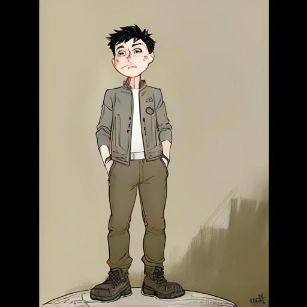
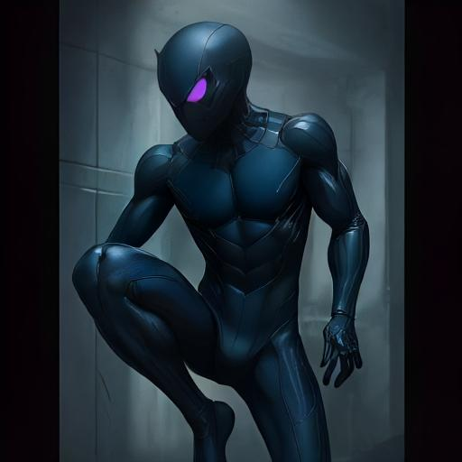

Origin
Leo, a quiet biology student with a deep connection to nature, was transformed by a genetically enhanced spider bite. Now, as The Nightweaver, he moves silently through the night, sensing danger through invisible threads.

Powers & Suit
Using his Webconnectie, The Nightweaver detects movement and vibrations through ultra-thin sensory threads. His suit, known as The Lurker, is lightweight, silent, and lined with reflective web patterns only visible at certain angles.

Nemesis: Vexon
Dr. Mila Vreugde, aka Vexon, manipulates sensory chaos through sound and light to disorient her enemies. She thrives in disorder — the perfect foil to Nightweaver’s calm precision.